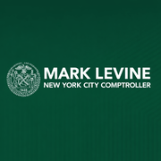
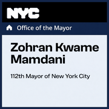
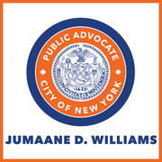

Each section is closed until you tap it.
Bronx Community Board 1Community Boards
↗Bronx Community Board 10Community Boards
↗Bronx Community Board 11Community Boards
↗Bronx Community Board 12Community Boards
↗Bronx Community Board 2Community Boards
↗Bronx Community Board 3Community Boards
↗Bronx Community Board 4Community Boards
↗Bronx Community Board 5Community Boards
↗Bronx Community Board 6Community Boards
↗Bronx Community Board 7Community Boards
↗Bronx Community Board 8Community Boards
↗Bronx Community Board 9Community Boards
↗
Brooklyn Community Board 1Community Boards
↗
Brooklyn Community Board 10Community Boards
↗
Brooklyn Community Board 11Community Boards
↗
Brooklyn Community Board 12Community Boards
↗
Brooklyn Community Board 13Community Boards
↗
Brooklyn Community Board 14Community Boards
↗
Brooklyn Community Board 15Community Boards
↗
Brooklyn Community Board 16Community Boards
↗
Brooklyn Community Board 17Community Boards
↗
Brooklyn Community Board 18Community Boards
↗
Brooklyn Community Board 2Community Boards
↗
Brooklyn Community Board 3Community Boards
↗
Brooklyn Community Board 4Community Boards
↗
Brooklyn Community Board 5Community Boards
↗
Brooklyn Community Board 6Community Boards
›
Brooklyn Community Board 7Community Boards
↗
Brooklyn Community Board 8Community Boards
↗
Brooklyn Community Board 9Community Boards
↗Manhattan Community Board 1Community Boards
↗Manhattan Community Board 10Community Boards
↗Manhattan Community Board 11Community Boards
↗Manhattan Community Board 12Community Boards
↗Manhattan Community Board 2Community Boards
↗Manhattan Community Board 3Community Boards
↗Manhattan Community Board 4Community Boards
↗Manhattan Community Board 5Community Boards
↗Manhattan Community Board 6Community Boards
↗Manhattan Community Board 7Community Boards
↗Manhattan Community Board 8Community Boards
↗Manhattan Community Board 9Community Boards
↗Queens Community Board 1Community Boards
↗Queens Community Board 10Community Boards
↗Queens Community Board 11Community Boards
↗Queens Community Board 12Community Boards
↗Queens Community Board 13Community Boards
↗Queens Community Board 14Community Boards
↗Queens Community Board 2Community Boards
↗Queens Community Board 3Community Boards
↗Queens Community Board 4Community Boards
↗Queens Community Board 5Community Boards
↗Queens Community Board 6Community Boards
↗Queens Community Board 7Community Boards
↗Queens Community Board 8Community Boards
↗Queens Community Board 9Community Boards
↗Staten Island Community Board 1Community Boards
↗Staten Island Community Board 2Community Boards
↗Staten Island Community Board 3Community Boards
↗
Thomas P. DiNapoli · Comptroller of the State of New YorkCitywide
›Kirsten Gillibrand · United States Senator for New YorkCitywide
›
Kathy Hochul · Governor of New YorkCitywide
›
Letitia James · Attorney General of New YorkCitywide
›
Mark Levine · Comptroller of the City of New YorkCitywide
›
Zohran Mamdani · Mayor of the City of New YorkCitywide
›
Chuck Schumer · United States Senator for New YorkCitywide
›
Jumaane Williams · Public Advocate for the City of New YorkCitywide
›Vito Fossella · Borough President of Staten IslandBorough Presidents
↗Vanessa Gibson · Borough President of the BronxBorough Presidents
↗Hoylman · MN BPBorough Presidents
↗
Antonio Reynoso · Borough President of BrooklynBorough Presidents
›Donovan Richards · Borough President of QueensBorough Presidents
↗Shaun Abreu · Council Member · City Council District 7NYC Council
↗Shirley Aldebol · Council Member · City Council District 13NYC Council
↗Joann Ariola · Council Member · City Council District 32NYC Council
↗Aviles · CD38NYC Council
↗
Chris Banks · Council Member · City Council District 42NYC Council
›Gale Brewer · Council Member · City Council District 6NYC Council
↗Selvena Brooks-Powers · Council Member · City Council District 31NYC Council
↗Caban · CD22NYC Council
↗
David Carr · Council Member · City Council District 50NYC Council
›Carmen De La Rosa · Council Member · City Council District 10NYC Council
↗Eric Dinowitz · Council Member · City Council District 11NYC Council
↗Elsie Encarnacion · Council Member · City Council District 8NYC Council
↗
Harvey Epstein · Council Member · City Council District 2NYC Council
›Farias · CD18NYC Council
↗
Simcha Felder · Council Member · City Council District 44NYC Council
›Oswald Feliz · Council Member · City Council District 15NYC Council
↗James Gennaro · Council Member · City Council District 24NYC Council
↗Gutierrez · CD34NYC Council
↗
Shahana Hanif · Council Member · City Council District 39NYC Council
›Ty Hankerson · Council Member · City Council District 28NYC Council
↗Kamillah Hanks · Council Member · City Council District 49NYC Council
↗
Crystal Hudson · Council Member · City Council District 35NYC Council
›
Rita Joseph · Council Member · City Council District 40NYC Council
›Shekar Krishnan · Council Member · City Council District 25NYC Council
↗Linda Lee · Council Member · City Council District 23NYC Council
↗
Farah Louis · Council Member · City Council District 45NYC Council
›Virginia Maloney · Council Member · City Council District 4NYC Council
↗
Christopher Marte · Council Member · City Council District 1NYC Council
›
Darlene Mealy · Council Member · City Council District 41NYC Council
›Julie Menin · Council Member · City Council District 5NYC Council
↗Frank Morano · Council Member · City Council District 51NYC Council
↗Mercedes Narcisse · Council Member · City Council District 46NYC Council
↗
Sandy Nurse · Council Member · City Council District 37NYC Council
›Osse · CD36NYC Council
↗Vickie Paladino · Council Member · City Council District 19NYC Council
↗
Lincoln Restler · Council Member · City Council District 33NYC Council
›Kevin Riley · Council Member · City Council District 12NYC Council
↗Yusef Salaam · Council Member · City Council District 9NYC Council
↗Pierina Ana Sanchez · Council Member · City Council District 14NYC Council
↗Justin Sanchez · Council Member · City Council District 17NYC Council
↗
Kayla Santosuosso · Council Member · City Council District 47NYC Council
›Lynn Schulman · Council Member · City Council District 29NYC Council
↗Althea Stevens · Council Member · City Council District 16NYC Council
↗Shanel Thomas-Henry · Council Member · City Council District 21NYC Council
↗Sandra Ung · Council Member · City Council District 20NYC Council
↗Inna Vernikov · Council Member · City Council District 48NYC Council
↗Nantasha Williams · Council Member · City Council District 27NYC Council
↗
Carl Wilson · Council Member · City Council District 3NYC Council
›Julie Won · Council Member · City Council District 26NYC Council
↗Phil Wong · Council Member · City Council District 30NYC Council
↗
Susan Zhuang · Council Member · City Council District 43NYC Council
›George Alvarez · Assembly Member · State Assembly District 78State Assembly
↗Khaleel M. Anderson · Assembly Member · State Assembly District 31State Assembly
↗Michael Benedetto · Assembly Member · State Assembly District 82State Assembly
↗Sam Berger · Assembly Member · State Assembly District 27State Assembly
↗
Rodneyse Bichotte Hermelyn · Assembly Member · State Assembly District 42State Assembly
›Alex Bores · Assembly Member · State Assembly District 73State Assembly
↗Edward C. Braunstein · Assembly Member · State Assembly District 26State Assembly
↗
Alec Brook-Krasny · Assembly Member · State Assembly District 46State Assembly
›
Robert C. Carroll · Assembly Member · State Assembly District 44State Assembly
›
Monique Chandler-Waterman · Assembly Member · State Assembly District 58State Assembly
›
Lester Chang · Assembly Member · State Assembly District 49State Assembly
›
William Colton · Assembly Member · State Assembly District 47State Assembly
›Vivian E. Cook · Assembly Member · State Assembly District 32State Assembly
↗Catalina Cruz · Assembly Member · State Assembly District 39State Assembly
↗
Brian Cunningham · Assembly Member · State Assembly District 43State Assembly
›Landon C. Dais · Assembly Member · State Assembly District 77State Assembly
↗Maritza Davila · Assembly Member · State Assembly District 53State Assembly
↗Manny De Los Santos · Assembly Member · State Assembly District 72State Assembly
↗
Erik M. Dilan · Assembly Member · State Assembly District 54State Assembly
›Jeffrey Dinowitz · Assembly Member · State Assembly District 81State Assembly
↗
Simcha Eichenstein · Assembly Member · State Assembly District 48State Assembly
›
Charles D. Fall · Assembly Member · State Assembly District 61State Assembly
›Emily Gallagher · Assembly Member · State Assembly District 50State Assembly
↗Edward Gibbs · Assembly Member · State Assembly District 68State Assembly
↗
Deborah J. Glick · Assembly Member · State Assembly District 66State Assembly
›Gonzalez-Rojas · AD34State Assembly
↗Carl E. Heastie · Assembly Member · State Assembly District 83State Assembly
↗Andrew Hevesi · Assembly Member · State Assembly District 28State Assembly
↗Larinda C. Hooks · Assembly Member · State Assembly District 35State Assembly
↗Alicia Hyndman · Assembly Member · State Assembly District 29State Assembly
↗Chantel Jackson · Assembly Member · State Assembly District 79State Assembly
↗Ron Kim · Assembly Member · State Assembly District 40State Assembly
↗Micah C. Lasher · Assembly Member · State Assembly District 69State Assembly
↗
Grace Lee · Assembly Member · State Assembly District 65State Assembly
›Nikki Lucas · Assembly Member · State Assembly District 60State Assembly
↗
Marcela Mitaynes · Assembly Member · State Assembly District 51State Assembly
›Diana C. Moreno · Assembly Member · State Assembly District 36State Assembly
↗Michael Novakhov · Assembly Member · State Assembly District 45State Assembly
↗Stacey Pheffer Amato · Assembly Member · State Assembly District 23State Assembly
↗Sam Pirozzolo · Assembly Member · State Assembly District 63State Assembly
↗
Keith Powers · Assembly Member · State Assembly District 74State Assembly
›Steven Raga · Assembly Member · State Assembly District 30State Assembly
↗Jenifer Rajkumar · Assembly Member · State Assembly District 38State Assembly
↗Michael Reilly · Assembly Member · State Assembly District 62State Assembly
↗Karines Reyes · Assembly Member · State Assembly District 87State Assembly
↗Linda B. Rosenthal · Assembly Member · State Assembly District 67State Assembly
↗Nily Rozic · Assembly Member · State Assembly District 25State Assembly
↗Rebecca A. Seawright · Assembly Member · State Assembly District 76State Assembly
↗Amanda Septimo · Assembly Member · State Assembly District 84State Assembly
↗
Jo Anne Simon · Assembly Member · State Assembly District 52State Assembly
›
Tony Simone · Assembly Member · State Assembly District 75State Assembly
›
Phara Souffrant Forrest · Assembly Member · State Assembly District 57State Assembly
›
Michael Tannousis · Assembly Member · State Assembly District 64State Assembly
›Yudelka Tapia · Assembly Member · State Assembly District 86State Assembly
↗Al Taylor · Assembly Member · State Assembly District 71State Assembly
↗Emérita Torres · Assembly Member · State Assembly District 85State Assembly
↗Claire Valdez · Assembly Member · State Assembly District 37State Assembly
↗Clyde Vanel · Assembly Member · State Assembly District 33State Assembly
↗
Latrice M. Walker · Assembly Member · State Assembly District 55State Assembly
›David I. Weprin · Assembly Member · State Assembly District 24State Assembly
↗Jaime R. Williams · Assembly Member · State Assembly District 59State Assembly
↗Jordan J.G. Wright · Assembly Member · State Assembly District 70State Assembly
↗Kalman Yeger · Assembly Member · State Assembly District 41State Assembly
↗Zaccaro · AD80State Assembly
↗
Stefani Zinerman · Assembly Member · State Assembly District 56State Assembly
›Addabbo · SD15State Senate
↗Jamaal T. Bailey · State Senator · State Senate District 36State Senate
↗
Erik Bottcher · State Senator · State Senate District 47State Senate
›
Jabari Brisport · State Senator · State Senate District 25State Senate
›
Stephen T. Chan · State Senator · State Senate District 17State Senate
›Cordell Cleare · State Senator · State Senate District 30State Senate
↗Leroy Comrie · State Senator · State Senate District 14State Senate
↗Nathalia Fernandez · State Senator · State Senate District 34State Senate
↗Michael Gianaris · State Senator · State Senate District 12State Senate
↗
Kristen Gonzalez · State Senator · State Senate District 59State Senate
›
Andrew Gounardes · State Senator · State Senate District 26State Senate
›Robert Jackson · State Senator · State Senate District 31State Senate
↗
Brian Kavanagh · State Senator · State Senate District 27State Senate
›
Liz Krueger · State Senator · State Senate District 28State Senate
›Andrew J. Lanza · State Senator · State Senate District 24State Senate
↗John C. Liu · State Senator · State Senate District 16State Senate
↗
Zellnor Myrie · State Senator · State Senate District 20State Senate
›
Kevin S. Parker · State Senator · State Senate District 21State Senate
›Roxanne J. Persaud · State Senator · State Senate District 19State Senate
↗Jessica Ramos · State Senator · State Senate District 13State Senate
↗Gustavo Rivera · State Senator · State Senate District 33State Senate
↗
Julia Salazar · State Senator · State Senate District 18State Senate
›Sanders · SD10State Senate
↗Jessica Scarcella-Spanton · State Senator · State Senate District 23State Senate
↗Sepulveda · SD32State Senate
↗Jose M. Serrano · State Senator · State Senate District 29State Senate
↗Toby Ann Stavisky · State Senator · State Senate District 11State Senate
↗
Sam Sutton · State Senator · State Senate District 22State Senate
›
Yvette Clarke · Representative · New York’s 9th Congressional DistrictU.S. Congress
›Adriano Espaillat · Representative · New York’s 13th Congressional DistrictU.S. Congress
↗
Dan Goldman · Representative · New York’s 10th Congressional DistrictU.S. Congress
›
Hakeem Jeffries · Representative · New York’s 8th Congressional DistrictU.S. Congress
›George Latimer · Representative · New York’s 16th Congressional DistrictU.S. Congress
↗
Nicole Malliotakis · Representative · New York’s 11th Congressional DistrictU.S. Congress
›Gregory Meeks · Representative · New York’s 5th Congressional DistrictU.S. Congress
↗Grace Meng · Representative · New York’s 6th Congressional DistrictU.S. Congress
↗Jerry Nadler · Representative · New York’s 12th Congressional DistrictU.S. Congress
↗Alexandria Ocasio-Cortez · Representative · New York’s 14th Congressional DistrictU.S. Congress
↗Tom Suozzi · Representative · New York’s 3rd Congressional DistrictU.S. Congress
↗Ritchie Torres · Representative · New York’s 15th Congressional DistrictU.S. Congress
↗Velazquez · NY-7U.S. Congress
↗Alvin Bragg · District Attorney of New York County (Manhattan)District Attorneys
↗Darcel D. Clark · District Attorney of Bronx CountyDistrict Attorneys
↗
Eric Gonzalez · District Attorney of Kings County (Brooklyn)District Attorneys
›Melinda Katz · District Attorney of Queens CountyDistrict Attorneys
↗Michael E. McMahon · District Attorney of Richmond County (Staten Island)District Attorneys
↗100th PrecinctNYPD Precincts
↗101st PrecinctNYPD Precincts
↗102nd PrecinctNYPD Precincts
↗103rd PrecinctNYPD Precincts
↗104th PrecinctNYPD Precincts
↗105th PrecinctNYPD Precincts
↗106th PrecinctNYPD Precincts
↗107th PrecinctNYPD Precincts
↗108th PrecinctNYPD Precincts
↗109th PrecinctNYPD Precincts
↗10th PrecinctNYPD Precincts
↗110th PrecinctNYPD Precincts
↗111th PrecinctNYPD Precincts
↗112th PrecinctNYPD Precincts
↗113th PrecinctNYPD Precincts
↗114th PrecinctNYPD Precincts
↗115th PrecinctNYPD Precincts
↗116th PrecinctNYPD Precincts
↗120th PrecinctNYPD Precincts
↗121st PrecinctNYPD Precincts
↗122nd PrecinctNYPD Precincts
↗123rd PrecinctNYPD Precincts
↗13th PrecinctNYPD Precincts
↗14th PrecinctNYPD Precincts
↗17th PrecinctNYPD Precincts
↗18th PrecinctNYPD Precincts
↗19th PrecinctNYPD Precincts
↗1st PrecinctNYPD Precincts
↗20th PrecinctNYPD Precincts
↗22nd PrecinctNYPD Precincts
↗23rd PrecinctNYPD Precincts
↗24th PrecinctNYPD Precincts
↗25th PrecinctNYPD Precincts
↗26th PrecinctNYPD Precincts
↗28th PrecinctNYPD Precincts
↗30th PrecinctNYPD Precincts
↗32nd PrecinctNYPD Precincts
↗33rd PrecinctNYPD Precincts
↗34th PrecinctNYPD Precincts
↗40th PrecinctNYPD Precincts
↗41st PrecinctNYPD Precincts
↗42nd PrecinctNYPD Precincts
↗43rd PrecinctNYPD Precincts
↗44th PrecinctNYPD Precincts
↗45th PrecinctNYPD Precincts
↗46th PrecinctNYPD Precincts
↗47th PrecinctNYPD Precincts
↗48th PrecinctNYPD Precincts
↗49th PrecinctNYPD Precincts
↗50th PrecinctNYPD Precincts
↗52nd PrecinctNYPD Precincts
↗5th PrecinctNYPD Precincts
↗60th PrecinctNYPD Precincts
↗61st PrecinctNYPD Precincts
↗62nd PrecinctNYPD Precincts
↗63rd PrecinctNYPD Precincts
↗66th PrecinctNYPD Precincts
↗67th PrecinctNYPD Precincts
↗68th PrecinctNYPD Precincts
↗69th PrecinctNYPD Precincts
↗6th PrecinctNYPD Precincts
↗70th PrecinctNYPD Precincts
↗71st PrecinctNYPD Precincts
↗72nd PrecinctNYPD Precincts
↗73rd PrecinctNYPD Precincts
↗75th PrecinctNYPD Precincts
↗76th PrecinctNYPD Precincts
↗77th PrecinctNYPD Precincts
↗78th PrecinctNYPD Precincts
↗79th PrecinctNYPD Precincts
↗7th PrecinctNYPD Precincts
↗81st PrecinctNYPD Precincts
↗83rd PrecinctNYPD Precincts
↗84th PrecinctNYPD Precincts
↗88th PrecinctNYPD Precincts
↗90th PrecinctNYPD Precincts
↗94th PrecinctNYPD Precincts
↗9th PrecinctNYPD Precincts
↗Administrative Justice Coordinator (AJC)Coordinates administrative justice citywide.
↗Administrative Tax Appeals (OATA)Includes Tax Commission and Tax Appeals Tribunal.
↗Administrative Trials and Hearings (OATH)Independent administrative law court.
↗Buildings (DOB)Ensures building code compliance.
↗Business Integrity Commission (BIC)Regulates waste hauling and wholesale markets.
↗CUNYPublic university system.
↗Campaign Finance Board (CFB)Administers public campaign financing.
↗Center for Innovation through Data Intelligence (CIDI)Policy informed by data for human services.
↗Chief Counsel to the MayorLegal advice to the Mayor.
↗Chief Medical Examiner (OCME)Forensic investigations and DNA services.
↗Children's Services (ACS)Child welfare and juvenile justice.
↗City ClerkRecord-keeper; marriage licenses.
↗City Planning (DCP)Zoning and land use planning.
↗Citywide Administrative Services (DCAS)Government personnel, fleet, and property management.
↗Civil Service Commission (CSC)Hears civil service personnel appeals.
↗Civilian Complaint Review Board (CCRB)Investigates police misconduct.
↗Climate and Environmental Justice (MOCEJ)Coordinates environmental policy.
↗Commission on Human Rights (CCHR)Enforces anti-discrimination laws.
↗Community Mental Health (OCMH)Mental health programming oversight.
↗Conflicts of Interest Board (COIB)Ethics enforcement.
↗Consumer and Worker Protection (DCWP)Regulates business and protects workers.
↗Correction (DOC)Manages city jails.
↗Cultural Affairs (DCLA)Supports cultural non-profits.
↗Cyber Command (NYC3)Defends city IT infrastructure.
↗Design and Construction (DDC)Capital infrastructure construction.
↗Economic Development Corp. (NYCEDC)Economic growth and asset management.
↗Emergency Management (NYCEM)Coordinates disaster response.
↗Environmental Protection (DEP)Water supply and wastewater management.
↗Finance (DOF)Tax and revenue collection.
↗Fire Department (FDNY)Fire and EMS services.
↗Health + Hospitals (H+H)Public healthcare system.
↗Health and Mental Hygiene (DOHMH)Protects public health.
↗Homeless Services (DHS)Shelter and rehousing.
↗Housing Authority (NYCHA)Public housing provider.
↗Housing Preservation (HPD)Affordable housing development.
↗Human Resources Administration (HRA)SNAP, cash assistance, Medicaid.
↗Immigrant Affairs (MOIA)Support for immigrants.
↗Investigation (DOI)Corruption investigations.
↗Landmarks Preservation (LPC)Protects historic buildings.
↗Law Department (LAW)City's legal counsel.
↗Mayor's Office of Administrative ServicesInternal administrative and personnel operations.
↗Mayor's Office of Animal Welfare (MOAW)Promotes health and safety of city animals.
↗Mayor's Office of Appointments (MOA)Recruitment for boards and commissions.
↗Mayor's Office of Contract Services (MOCS)Procurement and contract tracking.
↗Mayor's Office of Data Analytics (MODA)Data-driven service improvement.
↗Media and Entertainment (MOME)Creative and entertainment sectors.
↗NYC Aging (DFTA)Services and advocacy for older New Yorkers.
↗NYC ComptrollerFiscal audit and pension management.
↗New York City Council (NYCC)Legislative body of New York City.
↗Office of the Actuary (NYCOA)Actuarial services for retirement systems.
↗Parks and Recreation (DPR)Manages city parks.
↗Police (NYPD)Law enforcement.
↗Probation (DOP)Supervision for probationers.
↗Public AdvocateResident ombudsman.
↗Public Schools (NYCPS / DOE)Manages the city's public school education system.
↗Sanitation (DSNY)Waste and snow management.
↗Small Business Services (SBS)Small business growth support.
↗Taxi & Limousine Commission (TLC)Regulates for-hire vehicles.
↗Technology & Innovation (OTI)Digital strategy and IT.
↗Transportation (DOT)Bridges, streets, ferries.
↗Veterans' Services (DVS)Veteran benefit coordination.
↗Youth & Community Development (DYCD)Youth and neighborhood programs.
↗511NYReal-time statewide travel, road, and transit information.
↗Adirondack Park AgencyManages land use and protection in the Adirondack Park.
↗Authorities Budget OfficeMakes public authorities accountable, transparent, and acting in the public interest.
↗Battery Park City AuthorityMaintains a balanced community of commercial, residential, retail, and park space in lower Manhattan.
↗Board of ElectionsAdministers and enforces all state election laws.
↗Bridge AuthorityMaintains and operates five bridges in the Hudson Valley.
↗Canal CorporationOperates and maintains the 524-mile NYS canal system.
↗Central Pine Barrens Joint Planning and Policy CommissionOversees preservation and development in a 100,000+ acre Suffolk County region.
↗City University of New York (CUNY)High-quality, accessible education for 269,000+ degree students at 24 NYC campuses.
↗Commission of CorrectionOversight of state correctional facilities, county jails, and local police lock-ups.
↗Commission on Ethics and Lobbying in GovernmentProvides ethics training, guidance, enforcement, and lobbying transparency.
↗Commission on Judicial ConductInvestigates complaints of misconduct against judges of the state unified court system.
↗Commission on Prosecutorial ConductInvestigates prosecutorial conduct to strengthen oversight of prosecutors.
↗Corcraft ProductsEmploys incarcerated individuals in jobs that teach work skills and offset incarceration costs.
↗Council on Children and FamiliesProvides cross-systems perspective on services for children and families.
↗Council on Developmental DisabilitiesPromotes self-advocacy, participation, and inclusion for people with developmental disabilities.
↗Council on the Arts (NYSCA)Preserves and expands the state's diverse cultural resources.
↗Department of Agriculture and MarketsPromotes NY agriculture, environmental stewardship, and food supply safety.
↗Department of Civil ServiceThe state's principal human resources provider for the Executive Branch.
↗Department of Corrections and Community SupervisionManages state prisons and parole supervision; supports reentry to reduce recidivism.
↗Department of Education (NYSED)Oversees all schools and professional licensing; raises knowledge, skills, and opportunity.
↗Department of Environmental Conservation (DEC)Conserves, improves, and protects natural resources and environment.
↗Department of Financial Services (DFS)Regulates the financial service industry, guards against crises, protects consumers.
↗Department of Health (DOH)Protects, improves, and promotes health, productivity, and well-being.
↗Department of Labor (DOL)Protects workers, assists the unemployed, and connects job seekers to jobs.
↗Department of Motor Vehicles (DMV)Issues secure identity documents and vehicle/driver services; administers motor vehicle laws.
↗Department of Public ServiceSets utility rates and ensures safe, reliable electric, gas, telecom, water, and cable services.
↗Department of StateProvides licensing, incorporation, consumer protection, and local government services.
↗Department of Taxation and FinanceEfficiently collects tax revenues to support state services and programs.
↗Department of Transportation (DOT)Ensures a safe, efficient, balanced transportation system for New Yorkers.
↗Department of Veterans' ServicesAdvocates for veterans and their families to ensure they receive earned benefits.
↗Division of Consumer ProtectionProtects, educates, and represents consumers; combats marketplace scams.
↗Division of Criminal Justice Services (DCJS)Multi-function criminal justice support agency; enhances public safety.
↗Division of Homeland Security and Emergency ServicesImproves readiness, response, and recovery capabilities for communities statewide.
↗Division of Human RightsEnforces NYS Human Rights Law; ensures equal opportunity statewide.
↗Division of Military and Naval AffairsThe NY National Guard provides forces for global, state, and community missions.
↗Division of State PoliceStatewide law enforcement; serves, protects, and defends New Yorkers.
↗Division of Tax Appeals and Tax Appeals TribunalIndependent body resolving tax and licensing disputes.
↗Division of the BudgetPrepares the executive budget; advises on fiscal policy; monitors expenditures.
↗Dormitory Authority (DASNY)Public finance and construction authority for not-for-profit institutions.
↗Empire State DevelopmentAttracts new businesses; supports growth via incentives, real estate, and small business services.
↗Energy Research and Development Authority (NYSERDA)Increases energy efficiency and renewable energy use across the state.
↗Environmental Facilities CorporationHelps municipalities, non-profits, and small businesses meet water and air quality regulations.
↗Financial Control BoardOversees financial management of NYC government and certain related public authorities.
↗Gaming CommissionRegulates legal gambling in NY: horse racing, gaming, lottery, casinos, and charitable gaming.
↗Geographic Information Systems (GIS)Coordinates and facilitates the development and sharing of geographic information.
↗Governor's Traffic Safety CommitteeAwards federal grants to improve highway safety and reduce crash deaths.
↗Higher Education Services Corporation (HESC)NY State's higher education student financial aid agency.
↗Homes and Community RenewalAll the state's major housing and community renewal agencies.
↗Housing Finance Agency / SONYMAProvides mortgage financing for low- and moderate-income first-time homebuyers.
↗Hudson River Park TrustDesigns, builds, and operates the 5-mile Hudson River Park.
↗Hudson River Valley GreenwayDevelops a regional strategy for natural resource preservation and economic development.
↗Jacob K. Javits Convention CenterThe busiest convention center in the United States, hosting the world's leading events.
↗Justice Center for the Protection of People with Special NeedsSupports and protects people with special needs and disabilities.
↗Liquidation BureauCarries out duties of the Superintendent of Financial Services as receiver of impaired insurers.
↗Liquor Authority (SLA)Regulates the manufacture and sale of alcoholic beverages.
↗MTA Inspector GeneralIndependent oversight of the Metropolitan Transportation Authority.
↗Metropolitan Transportation Authority (MTA)Operates NYC Transit, LIRR, Metro-North, MTA Bridges and Tunnels, and MTA Bus.
↗NYC 311NYC's main source of government information and non-emergency services.
↗New York State AssemblyThe lower house of the State Legislature; 150 members.
↗New York State Insurance Fund (NYSIF)Workers' compensation and disability benefits insurance for NY businesses.
↗New York State Law Revision CommissionExamines state laws to discover defects and recommend reforms.
↗New York State SenateThe upper house of the State Legislature; 63 members.
↗Office for New AmericansAssists newcomers in NY State to contribute to the economy and integrate.
↗Office for People With Developmental Disabilities (OPWDD)Helps people with developmental disabilities access tailored services and supports.
↗Office for the Aging (NYSOFA)Helps older New Yorkers stay independent through advocacy and consumer-oriented services.
↗Office for the Prevention of Domestic ViolenceThe country's only executive-level state agency dedicated to domestic violence.
↗Office of Addiction Services and Supports (OASAS)Oversees prevention, treatment, and recovery programs serving 100,000+ people daily.
↗Office of Attorney GeneralStatewide elected office; chief legal officer of New York State.
↗Office of Cannabis ManagementRegulates licensure, cultivation, distribution, sale, and taxation of cannabis.
↗Office of Children and Family Services (OCFS)Promotes the safety and well-being of children and families.
↗Office of Counter TerrorismWorks with police and public safety agencies in the fight against terrorism.
↗Office of Emergency ManagementCoordinates state agencies to protect communities, economy, and environment from disasters.
↗Office of Employee RelationsRepresents the Governor in collective bargaining and administers state workforce programs.
↗Office of Fire Prevention and ControlFirefighter training, fire prevention, special operations, and technical rescue.
↗Office of General Services (OGS)Manages real estate, business services, design, construction, and procurement.
↗Office of Information Technology Services (ITS)Provides centralized IT services and sets statewide technology policy.
↗Office of Interoperable and Emergency Communications (OIEC)Directs interoperable and emergency communications including land/mobile radio.
↗Office of Mental Health (OMH)Promotes mental health and supports recovery for adults and children.
↗Office of Parks, Recreation and Historic PreservationOperates the state parks system and historic sites.
↗Office of State ComptrollerStatewide elected office; chief fiscal officer ensuring effective use of taxpayer money.
↗Office of Temporary and Disability Assistance (OTDA)Helps vulnerable New Yorkers with stable employment, housing, and nutrition.
↗Office of Victim ServicesProvides a safety net for crime victims and funds programs serving them.
↗Office of the GovernorExecutive office of New York State.
↗Office of the Medicaid Inspector General (OMIG)Prevents and detects fraud, abuse, and waste in the Medicaid program.
↗Offices of the Inspector GeneralEnsures NYS government meets standards of honesty, accountability, and efficiency.
↗Olympic Regional Development Authority (ORDA)Operates Whiteface, Gore, Belleayre, and Lake Placid Olympic facilities.
↗Port Authority of New York and New JerseyBuilds, operates, and maintains aviation, rail, surface, and seaport facilities.
↗Power Authority (NYPA)The nation's largest state public power organization.
↗Roosevelt Island Operating Corporation (RIOC)Public-benefit corporation responsible for developing Roosevelt Island.
↗South Shore Estuary CouncilProtects the long-term health of the Long Island South Shore Estuary.
↗State Employees Federated Appeal (SEFA)Charitable solicitation of state employees via payroll deduction.
↗State University Construction FundConstructs academic buildings, dormitories, and facilities for state institutions.
↗State University of New York (SUNY)The largest comprehensive university system in the United States.
↗Teachers' Retirement System (NYSTRS)Provides retirement, disability, and death benefits to NY public school teachers.
↗Thruway AuthorityOperates one of the longest toll roads in the nation; vital commercial link.
↗Workers' Compensation BoardProtects employee and employer rights through proper benefit delivery.
↗6/15 Green Community GardenCommunity garden · South Slope, Brooklyn
↗Artichoke Dance CompanyEco-arts dance company · Gowanus, Brooklyn
↗Arts GowanusCommunity based arts organisation · Gowanus, Brooklyn
↗Atlantic Avenue LDCLocal development corporation · Boerum Hill, Brooklyn
↗Bark SlopePet grooming and supply shop · Park Slope, Brooklyn
↗Bergen Bike BusVolunteer school bike bus · Boerum Hill, Brooklyn
↗Bird CollectiveBird apparel shop and birding events · Park Slope, Brooklyn
↗Books Are MagicIndependent bookstore · Carroll Gardens, Brooklyn
↗BRICArts and media institution · Downtown Brooklyn, Brooklyn
↗Brooklyn Botanic GardenBotanic garden · Prospect Heights, Brooklyn
↗Brooklyn Bridge ParkWaterfront park · Brooklyn Heights, Brooklyn
↗Brooklyn Conservatory of MusicCommunity music school · Park Slope, Brooklyn
↗Brooklyn Pop-UpArtisan market producer · Red Hook, Brooklyn
↗Brooklyn PrideLGBTQIA+ Pride organization · Park Slope, Brooklyn
↗Brooklyn Public LibraryPublic library system · Park Slope, Brooklyn
↗Camp FriendshipFood pantry and youth programs · Park Slope, Brooklyn
↗Carroll Gardens AssociationCommunity development and organizing nonprofit · Columbia Street Waterfront, Brooklyn
↗CHiPSSoup kitchen, food pantry and shelter · Park Slope, Brooklyn
↗Churches United For Fair HousingHousing advocacy organization · Bushwick, Brooklyn
↗Cobble Hill AssociationNeighborhood civic association · Cobble Hill, Brooklyn
↗Columbia Street Waterfront AssociationNeighborhood association · Columbia Street Waterfront, Brooklyn
↗DuBois Bunche Center for Public PolicyPublic policy research center · Crown Heights, Brooklyn
↗Fifth Avenue CommitteeCommunity based organisation · Park Slope and Gowanus, Brooklyn
↗Fort Defiance Sidewalk GalleriesOutdoor art galleries · Red Hook, Brooklyn
↗Forth on Fourth AvenuePark Slope Civic Council committee · Park Slope, Brooklyn
↗Friends of FirefightersMental health nonprofit for the FDNY · Red Hook, Brooklyn
↗Gowanus Canal ConservancyCommunity based organisation · Gowanus, Brooklyn
↗Gowanus Dredgers Canoe ClubVolunteer canoe club and waterfront group · Gowanus, Brooklyn
↗Grown-Up Bike BusWeekly group bike commute · Gowanus, Brooklyn
↗Hook Arts MediaArts and media education nonprofit · Red Hook, Brooklyn
↗House Pepper Culinary UniverseCulinary business · Red Hook, Brooklyn
↗Jalopy Theatre and School of MusicFolk music venue and school · Columbia Street Waterfront, Brooklyn
↗Nitehawk Cinema Prospect ParkDine-in movie theater · Park Slope, Brooklyn
↗Pacemakers Dance TeamSenior dance team · New York City
↗Park Slope Civic CouncilNeighborhood civic council · Park Slope, Brooklyn
↗Park Slope Farmers MarketYear-round farmers market · Park Slope, Brooklyn
↗Park Slope Fifth Avenue BIDBusiness improvement district · Park Slope, Brooklyn
↗Park Slope Food CoopMember-owned food cooperative · Park Slope, Brooklyn
↗Park Slope Open StreetsVolunteer open streets program · Park Slope, Brooklyn
↗Pioneer WorksArts and science cultural center · Red Hook, Brooklyn
↗Porch StompFolk music and dance organization · Governors Island
↗PortSide NewYorkMaritime nonprofit · Red Hook, Brooklyn
↗Powerhouse ArtsNonprofit creative production center · Gowanus, Brooklyn
↗Principles GI Coffee HouseCommunity cafe and event space · Gowanus, Brooklyn
↗Prospect Park AlliancePark conservancy · Park Slope, Brooklyn
↗Record ShopRecord store and music venue · Red Hook, Brooklyn
↗Red Hook Art ProjectFree youth arts program · Red Hook, Brooklyn
↗Red Hook Business AllianceBusiness association · Red Hook, Brooklyn
↗Red Hook InitiativeYouth and community nonprofit · Red Hook, Brooklyn
↗Red Hook Lobster PoundSeafood restaurant · Red Hook, Brooklyn
↗Resilient Red HookCommunity resiliency committee · Red Hook, Brooklyn
↗Rooftop FilmsOutdoor film nonprofit · Gowanus, Brooklyn
↗SBIDCSouthwest Brooklyn Industrial Development Corporation · Sunset Park, Red Hook and Gowanus
↗Smith Street StageTheater company · Carroll Gardens, Brooklyn
↗South Brooklyn SoccerSoccer tournament · Gravesend, Brooklyn
↗Southwest Brooklyn Tenant UnionTenant union · Columbia Street Waterfront, Brooklyn
↗Street LabPublic space nonprofit · New York City
↗Strong Rope BreweryNew York State farm brewery · Gowanus, Brooklyn
↗The Old Stone HouseHistoric house and Washington Park · Park Slope and Gowanus, Brooklyn
↗The Secret GardenCommunity garden · Cobble Hill, Brooklyn
↗Van Alen InstituteCommunity based organisation · Gowanus, Brooklyn
↗Waterfront MuseumFloating museum and showboat · Red Hook, Brooklyn
↗Why Not ArtImmersive public art organization · Gowanus, Brooklyn
↗Wytchonymous ArtsArts group · Governors Island
↗The bkcb6.app Government Directory (bkcb6.app/library.html): community boards, elected officials, precincts and city and state agencies.